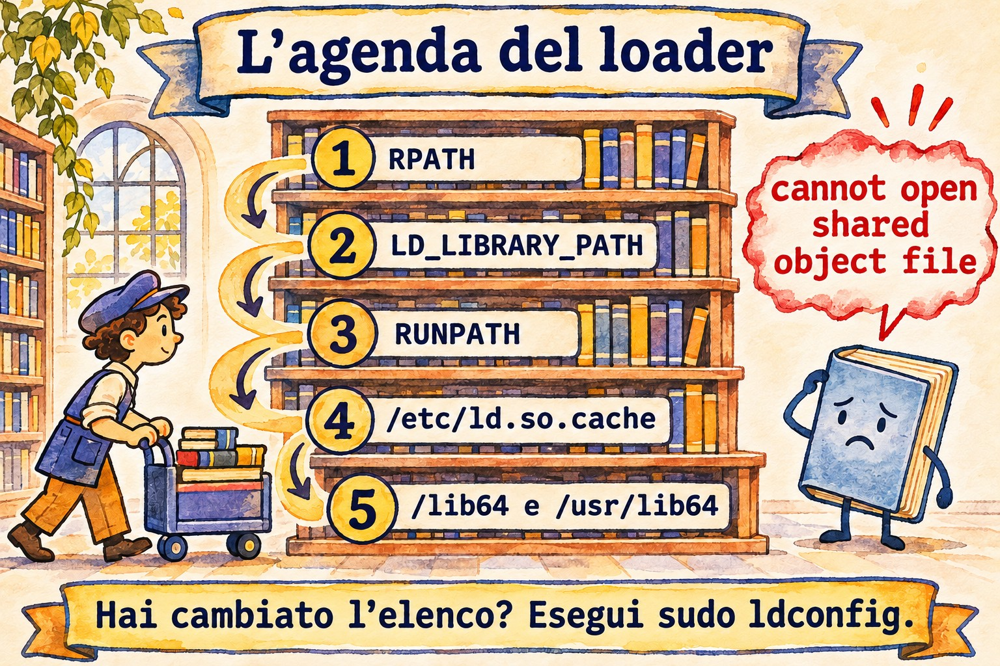

Lezione 6.5 · Librerie condivise
Quasi nessun programma Linux funziona da solo. ls, sshd e dnf caricano, nel momento in cui girano, librerie che stanno in altri file: la libc, la libssl, la libz. Quando una di queste manca, è nella cartella sbagliata o è la versione sbagliata, compare il messaggio che ogni sysadmin ha già visto: error while loading shared libraries. Questa lezione ti insegna a leggere quel messaggio e a risolverlo nel modo giusto. Alla fine arriva la Sfida dell'M6.
Il cuore di questa lezione: capire i tre nomi di una libreria (real name, soname, linker name); vedere le dipendenze di un programma con
lddereadelf; sapere dove cerca il loader; registrare una nuova cartella con/etc/ld.so.conf.deldconfig; e sapere perchéLD_LIBRARY_PATHe i symlink improvvisati sono rattoppi. Il resto è approfondimento.
| Scheda | |
|---|---|
| Modulo | M6 · Software, lezione 5 di 5, con la Sfida del modulo |
| Quando | Settimana 11. La Sfida può slittare a fine settimana o alla 12 |
| Alla fine | Diagnostichi e risolvi una libreria che non si carica, senza arrangiarti con trucchi |
| Prerequisiti | Lezioni 6.1 a 6.3 |
| Durata | circa 2h, più 2h-3h per la Sfida |
| Snapshot | m6a5-inicio e m6a5-fim su rocky-lab. debian-lab si limita a essere letta |
1 · Riscaldamento
Rispondi prima di leggere.
- Se qualcuno cancella
libc.so.6, cosa succede als? E arm, che useresti per riparare? - Perché la stessa libreria compare con tre nomi, come
libz.so,libz.so.1elibz.so.1.2.13? - Hai copiato una libreria in
/opt/app/libe il programma continua a dire che non la trova. Perché?
2 · Perché conta
| La richiesta | La risposta sbagliata | Cosa provoca |
|---|---|---|
"L'app del fornitore chiede libssl.so.1.1 e Rocky 9 ha solo la 3" | ln -s libssl.so.3 libssl.so.1.1 | L'app parte e poi crolla, oppure corrompe i dati. L'interfaccia è cambiata |
| "Ho installato la lib e il programma non la trova" | export LD_LIBRARY_PATH=... in /etc/profile | Vale per tutti, tranne che per i servizi di systemd. E può sostituire la lib di altri programmi |
| "Sul mio terminale funziona e come servizio no" | Riavviare finché funziona | La tua shell ha una variabile che il servizio non ha |
| "Ho aggiornato OpenSSL per una falla di sicurezza" | Pensare che sia finita | I servizi già in esecuzione continuano con la versione vecchia in memoria fino al riavvio |
3 · Modello mentale
Il programma è una lista di invitati: nel binario c'è scritto "mi serve
libz.so.1elibc.so.6", solo il nome, senza indirizzo. A cercare ciascuno è il loader (ld-linux), e lo fa in un ordine fisso. La sua rubrica è/etc/ld.so.cache, cheldconfigcostruisce a partire dall'elenco di cartelle in/etc/ld.so.conf.d. Se la cartella non è nell'elenco e nessuno ha aggiornato la rubrica, il loader non trova la libreria, anche se il file è lì.
./programa
│ o kernel lê o ELF: "interpretador: /lib64/ld-linux-x86-64.so.2"
▼
ld-linux (o loader)
│ para cada NEEDED gravado no binário (ex.: libz.so.1):
├─ 1. RUNPATH/RPATH gravado no próprio binário
├─ 2. LD_LIBRARY_PATH (variável de ambiente)
├─ 3. /etc/ld.so.cache ← o ldconfig gera a partir de /etc/ld.so.conf(.d)
└─ 4. pastas padrão: /lib64 e /usr/lib64 (Rocky)
/lib/x86_64-linux-gnu e /usr/lib/x86_64-linux-gnu (Debian)
▼
não achou → "error while loading shared libraries: libz.so.1:
cannot open shared object file: No such file or directory"Il dettaglio sottile: il vecchio RPATH viene prima di LD_LIBRARY_PATH e il moderno RUNPATH viene dopo. Per l'uso quotidiano basta l'ordine del disegno.


4 · L'essenziale
I tre nomi
| Nome | Esempio | Cos'è | Chi lo crea |
|---|---|---|---|
| Real name | libz.so.1.2.13 | Il file vero, con la versione completa | Il pacchetto (zlib / zlib1g) |
| Soname | libz.so.1 | Symlink al real name. È il nome registrato nei programmi. Cambia solo quando l'interfaccia si rompe | ldconfig (e il pacchetto) |
| Linker name | libz.so | Symlink usato solo per compilare (-lz) | Il pacchetto di sviluppo (zlib-devel / zlib1g-dev) |
La regola che spiega tutto: stesso soname, interfaccia compatibile. libz.so.1.2.13 e libz.so.1.3.1 hanno lo stesso soname libz.so.1, quindi qualsiasi programma fatto per una usa anche l'altra. Una libz.so.2 sarebbe un'altra interfaccia, e i programmi vecchi continuerebbero a chiedere .so.1.
Comandi
| Voglio... | Comando |
|---|---|
| Vedere di quali librerie ha bisogno un programma e dove sono state trovate | ldd /usr/bin/ssh |
| Vedere solo ciò che è registrato nel binario, senza eseguire nulla | readelf -d /usr/bin/ssh | grep -E 'NEEDED|RUNPATH|RPATH' |
| Vedere la rubrica del loader | ldconfig -p | grep libz |
| Aggiornare la rubrica e i symlink dei soname | sudo ldconfig |
| Vedere le cartelle extra | cat /etc/ld.so.conf e ls /etc/ld.so.conf.d/ |
| Registrare una nuova cartella | echo /opt/app/lib | sudo tee /etc/ld.so.conf.d/app.conf e sudo ldconfig |
| Provare con una cartella valida solo per questo comando | LD_LIBRARY_PATH=/opt/app/lib ./programa |
| Vedere il loader che cerca, passo per passo | LD_DEBUG=libs ./programa |
| Scoprire il pacchetto proprietario di una lib | rpm -qf /usr/lib64/libz.so.1 / dpkg -S libz.so.1 |
| Scoprire quale pacchetto fornisce una lib mancante | dnf provides 'libz.so.1()(64bit)' / apt-file search libz.so.1 |
| Vedere i servizi che usano una lib vecchia dopo un aggiornamento | sudo dnf needs-restarting -s / sudo needrestart (Debian, pacchetto needrestart) |
Attenzione a ldd: su un binario sconosciuto può finire per eseguire codice del binario stesso. Per un programma che non conosci, usa readelf -d o objdump -p, che si limitano a leggere.
Rocky × Debian
| Rocky | Debian | |
|---|---|---|
| Cartelle predefinite (64 bit) | /lib64, /usr/lib64 | /lib/x86_64-linux-gnu, /usr/lib/x86_64-linux-gnu (multiarch) |
| Nome del pacchetto della lib | zlib, openssl-libs | zlib1g, libssl3 (il soname finisce nel nome) |
| Pacchetto per compilare | -devel (zlib-devel) | -dev (zlib1g-dev) |
Chi esegue ldconfig all'installazione | rpm stesso (trigger di file) | Trigger di dpkg |
| Trovare chi la fornisce | dnf provides 'libX.so.N()(64bit)' | apt-file search libX.so.N |
| Servizi con lib vecchia | dnf needs-restarting -s | needrestart |
Su Rocky, /lib64 è un symlink a /usr/lib64. Su Debian moderno, /lib è un symlink a /usr/lib. In entrambi, la cartella "vera" è quella sotto /usr.
5 · Lab guidato
Creerai una libreria giocattolo, libola, e la romperai e riparerai in vari modi.
Passo 0 · Snapshot, cartella e compilatore. Su Proxmox: qm snapshot 201 m6a5-inicio. Su rocky-lab:
sudo dnf install -y gcc
mkdir -p ~/lab65 && cd ~/lab65Passo 1 · Guardare un programma vero.
ldd /usr/bin/ls
readelf -d /usr/bin/ls | grep NEEDED
ls -l /usr/lib64/libz.so*
rpm -qf /usr/lib64/libz.so.1
ldconfig -p | grep libz
cat /etc/ld.so.conf
ls /etc/ld.so.conf.d/readelf mostra solo i nomi (soname). ldd mostra anche dove ciascuno è stato trovato. In ls -l, nota la catena di symlink: libz.so.1 punta al real name. libz.so (linker name) esiste solo se zlib-devel è installato.
Passo 2 · Creare la libreria e un programma che la usa.
cat > ola.c <<'EOF'
#include <stdio.h>
void ola(void) { puts("ola da biblioteca v1"); }
EOF
cat > main.c <<'EOF'
void ola(void);
int main(void) { ola(); return 0; }
EOF
gcc -fPIC -shared -Wl,-soname,libola.so.1 -o libola.so.1.0 ola.c
ln -s libola.so.1.0 libola.so
gcc -o app main.c -L. -lola
./app-Wl,-soname,libola.so.1 scrive il soname dentro la lib. ln -s crea il linker name, che gcc -lola usa per compilare. E ./app fallisce: error while loading shared libraries: libola.so.1: cannot open shared object file.
Passo 3 · Diagnosticare e provare senza installare.
ldd ./app | grep ola
readelf -d app | grep NEEDED
ls -l
LD_LIBRARY_PATH=. ./app
ldconfig -n .
ls -l
LD_LIBRARY_PATH=. ./appldd mostra libola.so.1 => not found. Il binario chiede libola.so.1 (il soname), non libola.so.1.0 né libola.so. Per questo il primo LD_LIBRARY_PATH=. fallisce ancora: nella cartella non esiste un file con quel nome. ldconfig -n . crea il symlink del soname solo in questa cartella, senza toccare la rubrica di sistema. Ora la prova funziona. Ma vale solo per quel comando.
Passo 4 · Installare nel modo giusto.
sudo mkdir -p /opt/ola/lib
sudo cp libola.so.1.0 /opt/ola/lib/
./app
echo /opt/ola/lib | sudo tee /etc/ld.so.conf.d/ola.conf
sudo ldconfig
ls -l /opt/ola/lib
ldconfig -p | grep ola
ldd ./app | grep ola
./appIl primo ./app continua a fallire: il file è lì, ma la cartella non è nella rubrica. Dopo ldconfig, sono cambiate due cose: la rubrica conosce la cartella, e ldconfig ha creato da solo il symlink libola.so.1 -> libola.so.1.0.
Passo 5 · Versioni: compatibile e incompatibile.
sed 's/v1/v1.1/' ola.c > ola11.c
gcc -fPIC -shared -Wl,-soname,libola.so.1 -o libola.so.1.1 ola11.c
sudo cp libola.so.1.1 /opt/ola/lib/
sudo ldconfig
ls -l /opt/ola/lib
./appStesso soname, versione maggiore: ldconfig ha spostato il symlink libola.so.1 sulla 1.1, e app usa la nuova senza ricompilare. È così che una correzione di sicurezza in openssl-libs arriva a tutti i programmi in un colpo solo.
sed 's/v1/v2/' ola.c > ola2.c
gcc -fPIC -shared -Wl,-soname,libola.so.2 -o libola.so.2.0 ola2.c
sudo cp libola.so.2.0 /opt/ola/lib/
sudo ldconfig
ls -l /opt/ola/lib
ldconfig -p | grep ola
./appSoname nuovo, interfaccia nuova: ora esistono libola.so.1 e libola.so.2 una accanto all'altra, e il vecchio app resta con la 1.1. Solo un programma ricompilato, contro .so.2, userebbe la versione 2. Per questo Rocky 9 può avere libssl.so.3 e, in un pacchetto di compatibilità, libssl.so.1.1 allo stesso tempo.
Passo 6 · RUNPATH: il binario che dice dove cercare.
gcc -o app-local main.c -L. -lola -Wl,-rpath,'$ORIGIN'
readelf -d app-local | grep -E 'NEEDED|RUNPATH'
./app-local
./app$ORIGIN significa "la cartella dove si trova il binario". app-local trova libola.so.1 in ~/lab65 (la v1) prima di guardare la rubrica, mentre app usa la 1.1 di sistema. Molte app di fornitori in /opt arrivano così, con le proprie lib accanto.
Passo 7 · debian-lab, sola lettura.
ldd /usr/bin/ls
ls -l /usr/lib/x86_64-linux-gnu/libz.so*
dpkg -S libz.so.1
cat /etc/ld.so.conf.d/*.confStessa idea, cartella multiarch diversa. Il pacchetto si chiama zlib1g: l'1 è il soname.
Non pulire ancora. I guasti della sezione 6 usano /opt/ola. La pulizia viene alla fine.
Decidi 1
Un'app di un fornitore in /opt/vendor non parte su Rocky 9: libssl.so.1.1: cannot open shared object file. Rocky 9 ha libssl.so.3. Cosa fai?
A) ln -s /usr/lib64/libssl.so.3 /usr/lib64/libssl.so.1.1. B) Installa il pacchetto di compatibilità della distribuzione (dnf provides 'libssl.so.1.1()(64bit)', su Rocky 9 è compat-openssl11) e chiede al fornitore una versione per OpenSSL 3. C) Scarica una libssl.so.1.1 da un sito qualsiasi e la butta in /usr/lib64.
Scegli un'opzione prima di continuare.
| Se hai scelto | Risultato | Perché |
|---|---|---|
| A | Parte e poi crolla, o peggio, funziona in modo sbagliato | Un soname diverso significa un'interfaccia diversa. Il symlink inganna il loader, non il codice |
| B | Giusto | Lib con il soname giusto, firmata, aggiornata da dnf, e il vero problema (app vecchia) resta registrato |
| C | La peggiore di tutte | Libreria di crittografia di origine sconosciuta, fuori da qualsiasi aggiornamento |
Da ricordare: quando manca un soname, cerca chi fornisce quel soname. Non puntare mai un soname a un altro.
Decidi 2
L'app in /opt/app porta in /opt/app/lib copie proprie di varie lib, tra cui una libcrypto.so.3 più vecchia di quella di sistema. Un collega ha risolto con export LD_LIBRARY_PATH=/opt/app/lib in /etc/profile. L'app gira come servizio di systemd. Cosa fai?
A) Lascia com'è, ha funzionato. B) Sostituisce con /etc/ld.so.conf.d/app.conf contenente /opt/app/lib ed esegue ldconfig. C) Rimuove da /etc/profile e mette la variabile solo nel servizio: Environment=LD_LIBRARY_PATH=/opt/app/lib nella unit (o uno script che esporta e chiama l'app).
Scegli un'opzione prima di continuare.
| Se hai scelto | Risultato | Perché |
|---|---|---|
| A | Sbagliato due volte | /etc/profile vale per i login, non per il servizio. E ogni programma che apri nella shell passa a usare la vecchia libcrypto dell'app |
| B | Pericoloso qui | Le cartelle di ld.so.conf.d entrano nella rubrica prima delle cartelle predefinite. L'intero sistema, compresi sshd e dnf, passerebbe a usare la vecchia libcrypto |
| C | Giusto | Solo l'app vede le sue lib |
Da ricordare: ld.so.conf.d serve per cartelle con lib che esistono solo lì. Una cartella con copie di lib di sistema resta limitata all'app che ne ha bisogno.
6 · Rompi e ripara
Guasto 1 · Rubrica non aggiornata

sudo rm /opt/ola/lib/libola.so.1
./app
ldconfig -p | grep olaSintomo: cannot open shared object file, anche se libola.so.1.1 è lì.
Diagnosi: la rubrica dice ancora che libola.so.1 è in /opt/ola/lib, ma ls -l /opt/ola/lib mostra che il symlink del soname è sparito. Il loader cerca per soname, non per il file con la versione.
Riparazione: sudo ldconfig. Ricrea il symlink e la rubrica. Controlla con ls -l e ./app.
Nella vita reale: succede quando qualcuno copia una lib a mano, o uno script di installazione cancella e ricopia dei file. Ogni volta che tocchi una lib fuori dal gestore di pacchetti: sudo ldconfig.
Guasto 2 · La libreria impostora
mkdir -p ~/lab65/falsa
sed 's/v1/IMPOSTORA/' ~/lab65/ola.c > ~/lab65/falsa.c
gcc -fPIC -shared -Wl,-soname,libola.so.1 -o ~/lab65/falsa/libola.so.1 ~/lab65/falsa.c
export LD_LIBRARY_PATH=~/lab65/falsa
./app
ldd ./app | grep ola
sudo ./app
unset LD_LIBRARY_PATH
./appSintomo: app stampa IMPOSTORA. Con sudo, torna normale.
Diagnosi: echo $LD_LIBRARY_PATH e ldd ./app mostrano la lib che arriva da ~/lab65/falsa. La variabile passa davanti alla rubrica.
Riparazione: unset LD_LIBRARY_PATH, e cercare dove è stata definita (~/.bashrc, /etc/profile.d/, /etc/environment).
Nella vita reale: è per questo che sudo pulisce l'ambiente, e che i programmi setuid ignorano LD_LIBRARY_PATH. Se valesse per root, qualsiasi utente sostituirebbe la libc di passwd con una sua.
Guasto 3 · Hanno rimosso una lib di sistema (narrativa)
Qualcuno ha eseguito rpm -e --nodeps openssl-libs per "reinstallare pulito". All'istante, ssh, curl e dnf si bloccano con libcrypto.so.3: cannot open shared object file. dnf non riesce a reinstallare perché ha bisogno lui stesso della lib.
Diagnosi: ldd /usr/bin/curl | grep 'not found' e rpm -V openssl-libs.
Riparazione: se rpm gira ancora, rpm -ivh del pacchetto estratto dalla ISO (è a questo che serve il repository della ISO della lezione 6.3). Se nemmeno lui gira, boot dalla ISO in modalità rescue e rpm --root=/mnt/sysroot -ivh ....
Da ricordare: --nodeps spegne proprio la protezione che impedisce questo. Quasi mai è la risposta.
Pulizia
unset LD_LIBRARY_PATH
sudo rm /etc/ld.so.conf.d/ola.conf
sudo rm -r /opt/ola
sudo ldconfig
ldconfig -p | grep olaL'ultimo comando non deve mostrare nulla. La cartella ~/lab65 può restare.
7 · Trappole
| Trappola | Cosa succede | Come evitarla |
|---|---|---|
Symlink da un soname a un altro (.so.1.1 → .so.3) | Fallisce subito, o peggio, più tardi e in silenzio | Cerca chi fornisce il soname giusto (dnf provides, apt-file) |
LD_LIBRARY_PATH globale in /etc/profile | Cambia la lib di ogni programma nella shell e non vale per i servizi | Mettila solo nel servizio (Environment=) o in uno script wrapper |
Cartella con copie di lib di sistema in ld.so.conf.d | L'intero sistema passa a usare le copie | Usa ld.so.conf.d solo per lib che esistono solo lì |
Copiare la lib e dimenticare ldconfig | Resta senza symlink del soname e con la rubrica vecchia | Sempre sudo ldconfig dopo aver toccato una lib fuori dal gestore |
ldd su un binario sconosciuto | Il binario può eseguire codice | Usa readelf -d o objdump -p |
| Aggiornare una lib e non riavviare niente | I servizi continuano con la versione vulnerabile in memoria | dnf needs-restarting -s / needrestart, e riavvia |
rpm -e --nodeps su una lib | Butta giù tutto ciò che ne dipende, a volte persino dnf | Non usare mai --nodeps su una lib. Usa dnf reinstall o dnf swap |
| Pensare che il loader cerchi nella cartella corrente | ./app non trova la lib che ha accanto | Succede solo con RUNPATH $ORIGIN o LD_LIBRARY_PATH |
Modificare /etc/ld.so.cache | È binario, corrompi il file | Modifica ld.so.conf.d ed esegui ldconfig |
8 · Quiz
Rispondi senza guardare. Le soluzioni sono alla fine della lezione.
- Qual è la differenza tra real name, soname e linker name? Chi crea ciascuno?
- Hai installato una lib in
/opt/x/libe il programma non la trova. Indica un modo temporaneo e due permanenti per risolvere. - Perché non eseguire
lddsu un binario arrivato da fuori? Cosa usare al suo posto? - Un'app vecchia chiede
libfoo.so.1e il sistema halibfoo.so.2. Perché il symlink è una cattiva idea? - Il programma funziona sul tuo terminale e fallisce quando gira come servizio di systemd. Qual è il sospettato numero uno?
- Which file lists additional directories that ldconfig scans for shared libraries? a) /etc/ld.so.cache b) /etc/ld.so.conf c) /etc/ldconfig.conf d) /etc/ld.so.preload
9 · Promemoria
Da sapere a memoria:
| Voglio... | Comando |
|---|---|
| Dipendenze di un programma | ldd PROGRAMA |
| Cosa è registrato nel binario | readelf -d PROGRAMA | grep -E 'NEEDED|RUNPATH' |
| Rubrica del loader | ldconfig -p | grep NOME |
| Rigenerare rubrica e symlink | sudo ldconfig |
| Registrare una cartella | echo /opt/x/lib | sudo tee /etc/ld.so.conf.d/x.conf e sudo ldconfig |
| Prova puntuale | LD_LIBRARY_PATH=/opt/x/lib ./programa |
Da consultare:
| Voglio... | Comando |
|---|---|
| Loader passo per passo | LD_DEBUG=libs ./programa |
| Pacchetto proprietario della lib | rpm -qf ARQUIVO / dpkg -S ARQUIVO |
| Chi fornisce il soname | dnf provides 'libX.so.N()(64bit)' / apt-file search libX.so.N |
| Servizi con lib vecchia | sudo dnf needs-restarting -s / sudo needrestart |
| Processi con lib cancellata | sudo lsof -n 2>/dev/null | grep 'DEL.*\.so' |
| Symlink solo in una cartella | ldconfig -n PASTA |
| Leggere l'ELF senza eseguirlo | objdump -p PROGRAMA |
| Lib precaricate a forza | cat /etc/ld.so.preload (di solito non esiste) |
| File di configurazione | /etc/ld.so.conf, /etc/ld.so.conf.d/*.conf, /etc/ld.so.cache |
Flashcard:
- Soname → il nome registrato nel programma. Cambia solo quando l'interfaccia si rompe.
- Ordine del loader → RUNPATH/RPATH, LD_LIBRARY_PATH, cache, cartelle predefinite.
- Hai toccato una lib a mano →
sudo ldconfig. - Manca
libX.so.N→ chi fornisce quel soname? Mai un symlink a un altro. - Hai aggiornato la lib → riavvia i servizi che la usano.
10 · Checklist e chiusura
- [ ] Spiego real name, soname e linker name
- [ ] Leggo un output di
ldde trovo ilnot found - [ ] Registro una cartella con
ld.so.conf.deldconfig - [ ] So perché
LD_LIBRARY_PATHserve per i test e non per il sistema - [ ] Spiego perché la stessa lib con lo stesso soname aggiorna tutti senza ricompilare
- [ ] So trovare chi fornisce un soname mancante, su entrambe le distro
- [ ] So scoprire i servizi che usano ancora una lib vecchia
Ultimo esercizio, senza guardare la lezione: in ~/lab65/final, crea una libtchau.so.1.0 con soname libtchau.so.1 e un programma che la usi. Fai girare il programma senza LD_LIBRARY_PATH e senza ld.so.conf.d. Suggerimento: il Passo 6. Poi spiega perché ha funzionato.
Reboot e verifica:
sudo reboot
ldconfig -p | grep -c ola
ls /etc/ld.so.conf.d/
echo "[$LD_LIBRARY_PATH]"
sudo dnf checkAtteso: 0, nessun ola.conf e la variabile vuota ([]).
Snapshot di fine (su Proxmox):
qm snapshot 201 m6a5-fim11 · Nella vita reale
Missione, sola lettura. Su un server Linux che amministri (o con autorizzazione), esegui solo:
cat /etc/ld.so.conf
cat /etc/ld.so.conf.d/*.conf
/usr/sbin/ldconfig -p | wc -l
ls -l /etc/ld.so.preload 2>/dev/null
grep -rs LD_LIBRARY_PATH /etc/profile /etc/profile.d/ /etc/environment /etc/systemd/system/
sudo dnf needs-restarting -s 2>/dev/null || sudo needrestart -b 2>/dev/nullDomande a cui rispondere:
- Quali cartelle extra sono registrate, e da quale pacchetto o app arriva ciascuna?
- Qualcuna contiene copie di lib di sistema (
libssl,libcrypto,libz)? Controlla conls. - Esiste
/etc/ld.so.preload? Su un server normale non dovrebbe esistere. Se esiste e non sai da dove viene, va investigato: è un posto classico per i rootkit. - Qualcuno usa
LD_LIBRARY_PATHglobalmente o in una unit? - Ci sono servizi da riavviare dopo l'ultimo aggiornamento?
Diario: annota la risposta alla 5. Se ci sono servizi in sospeso, diventa un'attività di manutenzione pianificata. Non riavviare nulla adesso.
Domani, senza guardare: scrivi l'ordine di ricerca del loader e i due comandi per registrare una nuova cartella.
12 · Approfondire quando vuoi
man ld.soeman ldconfig: l'ordine di ricerca esatto, RPATH × RUNPATH e la modalità sicura dei programmi setuid.LD_PRELOADe/etc/ld.so.preload: caricare una lib prima di tutte le altre. Si usa per il debug e anche nei malware.- Versionamento dei simboli: l'errore
version `GLIBC_2.34' not foundcompare quando porti un binario da un sistema nuovo a uno vecchio. - Statico × dinamico: perché Go genera binari quasi statici e perché la distribuzione preferisce il dinamico (una correzione vale per tutti).
patchelf: cambiare il RUNPATH di un binario già pronto.lddtree(pacchettopax-utils): l'intero albero delle dipendenze, senza eseguire il binario.
DeepTutor (http://10.1.0.149:3782, KB "Curso Linux Sysadmin"):
!explica a ordem em que o ld-linux procura bibliotecas!feynman o que é um soname e por que ele existe!quiz Aula 6.5, 5 perguntas sobre ldd e ldconfig
Sfida dell'M6 · Installazione offline
La missione: rocky-lab installa pacchetti senza internet, usando solo la ISO come repository, e continua così anche dopo il reboot.
Nella lezione 6.3 hai montato la ISO a mano e creato un repository temporaneo. Ora il risultato deve essere permanente, e a verificarlo è il reboot. Non c'è un passo-passo. I suggerimenti sono nelle Soluzioni, ma prova prima senza.
Prima di iniziare:
- Controlla che la ISO collegata alla VM sia la DVD (
Rocky-9.x-x86_64-dvd.iso), non la minimal. La minimal ha pochi pacchetti. Prova:dnf --repo=iso-appstream list --available | wc -l. - Esegui
qm snapshot 201 m6-desafio-inicio.
Requisiti:
- La ISO si monta da sola in
/mnt/isoal boot, tramite/etc/fstab, in sola lettura. Se la ISO non è collegata, il boot non deve bloccarsi. - Un file
/etc/yum.repos.d/local-iso.repocon i repository BaseOS e AppStream della ISO, congpgcheck=1e la chiave giusta. - Tutti i repository di rete disattivati in modo permanente: baseos, appstream, extras, crb, epel e qualsiasi altro che compaia. Non vale
--disablereposulla riga di comando. - Senza internet vero durante la prova:
sudo ip route del default(torna al reboot). - Installare un pacchetto di BaseOS (per esempio
zsh) e uno di AppStream (per esempiogit) che non siano ancora installati. sudo dnf check-updateesudo dnf makecachefiniscono in fretta e senza errori, senza provare a usare internet.
Criteri di accettazione (dopo un sudo reboot):
findmnt /mnt/iso
dnf repolist
sudo ip route del default
sudo dnf makecache
sudo dnf install -y zsh git
rpm -q zsh git
sudo dnf check-update; echo "saida=$?"- [ ]
findmntmostra la ISO in/mnt/iso, conro - [ ]
dnf repolistmostra solo i due repository della ISO - [ ] Ha installato i due pacchetti con la rotta predefinita rimossa
- [ ]
check-updatefinisce in pochi secondi (output0o100, senza errori di rete) - [ ] Con la ISO scollegata (
qm set 201 --ide2 none,media=cdrom), la VM fa comunque il boot
Bonus (facoltativo):
- Repository proprio: raccogli alcuni
.rpmin/srv/repo-local, genera i metadati concreaterepo_c(installa il pacchetto prima di staccare la rete) e crea un.repoper quella cartella. Hai appena costruito un mini mirror. - Debian: su debian-lab, fai l'equivalente con la ISO DVD 1 di Debian e
apt-cdrom add, oppure con una riga.sourcesche punta afile:/mnt/iso.
Alla fine: qm snapshot 201 m6-desafio-fim. I prossimi moduli hanno bisogno di internet. Torna allo stato normale con qm rollback 201 m6a5-fim. Lo snapshot della Sfida resta conservato come prova.
Hai chiuso l'M6. Ora installi, consulti, verifichi e rimuovi pacchetti in entrambe le famiglie, metti mano ai repository, usi Flatpak e risolvi una libreria che non si carica. Il prossimo modulo è nella scheda Piano.
Soluzioni commentate
Riscaldamento
- Quasi tutto si ferma.
ls,rm,bashednfdipendono dalibc.so.6. Qualsiasi nuovo comando fallisce al caricamento. Continuano solo i builtin della shell già aperta (echo,cd). La strada è boot dalla ISO in modalità rescue e reinstallareglibcconrpm --root. È l'esempio più estremo del Guasto 3. - Ogni nome ha una funzione.
libz.so.1.2.13è il file (real name).libz.so.1è il soname, quello che i programmi chiedono.libz.soè il linker name, che usa solo il compilatore. - La cartella non è nella rubrica del loader. Non scansiona il disco, consulta
/etc/ld.so.cachee le cartelle predefinite. O registri la cartella (ld.so.conf.d+ldconfig), o il binario porta il RUNPATH, o usiLD_LIBRARY_PATHsolo per quel programma. E controlla che lì esista il file con il nome del soname.
Quiz
- Il real name (
libfoo.so.1.4.2) è il file, e a crearlo è il pacchetto. Il soname (libfoo.so.1) è il symlink con il nome registrato nei programmi; a crearlo èldconfig(e il pacchetto). Il linker name (libfoo.so) serve per compilare con-lfoo, e arriva nel pacchetto-develo-dev. - Temporaneo:
LD_LIBRARY_PATH=/opt/x/lib ./programa. Permanenti: un file in/etc/ld.so.conf.d/piùsudo ldconfig, oppure il binario compilato con RUNPATH (-Wl,-rpath,..., opatchelfsu un binario già pronto). In un servizio vale ancheEnvironment=LD_LIBRARY_PATH=nella unit. - Perché
lddpuò finire per eseguire il binario per scoprirne le dipendenze, e un binario malevolo ne approfitta. Usareadelf -doobjdump -p, che leggono soltanto il file. - Perché un soname diverso significa un'interfaccia diversa: funzioni che hanno cambiato firma o sono sparite. Il loader accetta il symlink, ma il programma chiama cose che non esistono più o che funzionano in un altro modo. La cosa giusta è installare la lib con il soname
.so.1(pacchetto di compatibilità) o aggiornare l'app. LD_LIBRARY_PATH(o un'altra variabile) definita nel tuo~/.bashrco in/etc/profile. systemd non legge quei file. Controlla consystemctl show SERVICO -p Environmente conjournalctl -u SERVICO.- b)
/etc/ld.so.conf(che su Rocky e su Debian include solo/etc/ld.so.conf.d/*.conf). La a) è la rubrica binaria generata daldconfig. La c) non esiste. La d) è l'elenco delle lib precaricate.
Suggerimenti per la Sfida
Leggine una alla volta, solo quando sei bloccato.
- fstab: il formato è
dispositivo ponto tipo opções dump pass. Per la ISO nel lettore CD della VM:/dev/sr0 /mnt/iso iso9660 ro,nofail 0 0. Ènofaila impedire che il boot si blocchi senza la ISO. - Prima di riavviare:
sudo umount /mnt/iso, poisudo mount -aefindmnt --verify. Semount -asi lamenta, si lamenterà anche il reboot. - Il
.repo: è lo stesso della lezione 6.3, conbaseurl=file:///mnt/iso/BaseOSefile:///mnt/iso/AppStream,enabled=1,gpgcheck=1egpgkey=file:///etc/pki/rpm-gpg/RPM-GPG-KEY-Rocky-9. - Disattivare quelli di rete: prima guardali tutti con
dnf repolist --all. EPEL di solito porta più di un repository. Poisudo dnf config-manager --set-disabled baseos appstream extras crb epel ...e ricontrolla condnf repolist. - Cache vecchia: se
dnfprova ancora la rete, eseguisudo dnf clean allesudo dnf makecache. gitnon compare: conferma che sia la ISO DVD (ls /mnt/iso/AppStream/Packages | wc -ldeve dare alcune migliaia).createrepo_c(bonus): installalo prima di staccare la rete. Poisudo createrepo_c /srv/repo-locale un.repoconbaseurl=file:///srv/repo-local. Poiché i pacchetti erano firmati,gpgcheck=1continua a valere.